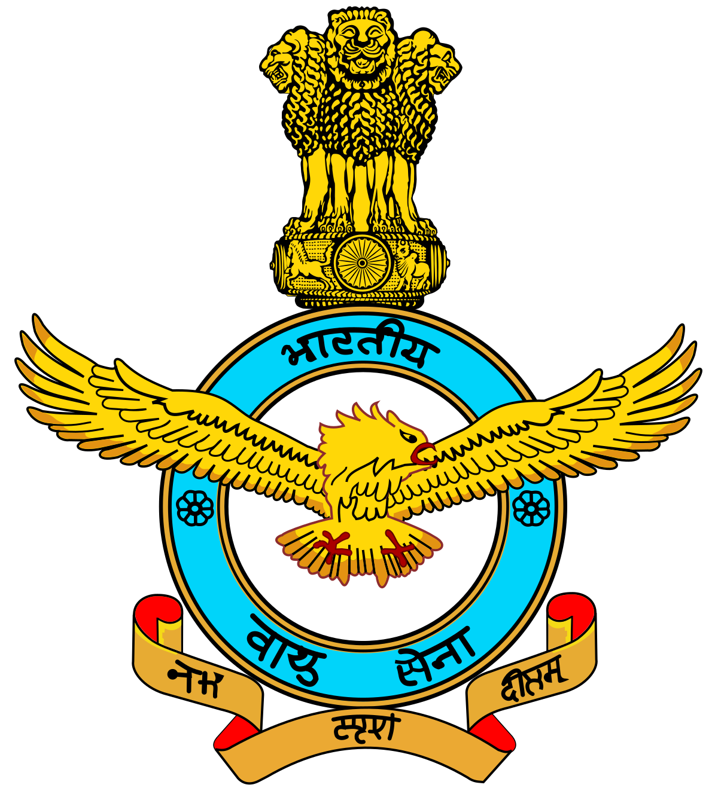

Rakesh Kumar Singh Bhadauria
CHIEF (CAS) OF INDIAN AIR FORCE
Air Chief Marshal Rakesh Kumar Singh Bhadauria PVSM AVSM VM ADC took over as the Chief of the Air Staff on 30 September 2019.
Chief of the Air Staff is the professional head and the commander of the Indian Air Force.[3] The position is abbreviated as CAS in the Indian Air Force cables and communication, and is always held by a full Air Chief Marshal since 1966.
The current CAS is Air Chief Marshal Rakesh Kumar Singh Bhadauria who took office on 30 September 2019, following the retirement of Air Chief Marshal Birender Singh Dhanoa.
At Independence, the head of the Air Force designated as the "Air Marshal Commanding, Royal Indian Air Force". On 1 March 1948, the title of "Chief of the Air Staff" was added,[5] with a further re-designation to "Chief of the Air Staff and Commander-in-Chief, Royal Indian Air Force" on 21 June to maintain uniformity across the three armed services
he "Royal" designation was dropped when India became a republic on 26 January 1950. Thus re-designating the head of IAF to "Chief of the Air Staff and Commander-in-Chief, Indian Air Force".
The Commanders-In-Chief (Change in Designation) Act, 1955 re-designated the head of IAF to "Chief of Air Staff". The position was held by a three-star ranked Air Marshal until 1966, when the position was upgraded to the four-star rank of an Air Chief Marshal.
The Indian Air Force (IAF) is the air arm of the Indian Armed Forces. Its complement of personnel and aircraft assets ranks fourth amongst the air forces of the world.[8] Its primary mission is to secure Indian airspace and to conduct aerial warfare during armed conflict. It was officially established on 8 October 1932 as an auxiliary air force of the British Empire which honoured India's aviation service during World War II with the prefix Royal.[9] After India gained independence from the United Kingdom in 1947, the name Royal Indian Air Force was kept and served in the name of Dominion of India. With the government's transition to a Republic in 1950, the prefix Royal was removed.
In practice, this is taken as a directive meaning the IAF bears the responsibility of safeguarding Indian airspace and thus furthering national interests in conjunction with the other branches of the armed forces. The IAF provides close air support to the Indian Army troops on the battlefield as well as strategic and tactical airlift capabilities. The Integrated Space Cell is operated by the Indian Armed Forces, the civilian Department of Space, and the Indian Space Research Organisation.
The Indian Air Force, with highly trained crews, pilots, and access to modern military assets provides India with the capacity to provide rapid response evacuation, search-and-rescue (SAR) operations, and delivery of relief supplies to affected areas via cargo aircraft.[18] The IAF provided extensive assistance to relief operations during natural calamities such as the Gujarat cyclone in 1998, the tsunami in 2004, and North India floods in 2013.[18] The IAF has also undertaken relief missions such as Operation Rainbow in Sri Lanka.

Crest of the Indian Air Force
History of Indian Air Force
Formation and early pilots
The Indian Air Force was established on 8 October 1932 in British India as an auxiliary air force[19] of the Royal Air Force. The enactment of the Indian Air Force Act 1932[20][21] stipulated out their auxiliary status and enforced the adoption of the Royal Air Force uniforms, badges, brevets and insignia.[22] On 1 April 1933, the IAF commissioned its first squadron, No.1 Squadron, with four Westland Wapiti biplanes and five Indian pilots. The Indian pilots were led by British RAF Commanding officer Flight Lieutenant (later Air Vice Marshal) Cecil Bouchier.
World War II (1939–1945)
During World War II, the IAF played an instrumental role in halting the advance of the Japanese army in Burma, where the first IAF air strike was executed. The target for this first mission was the Japanese military base in Arakan, after which IAF strike missions continued against the Japanese airbases at Mae Hong Son, Chiang Mai and Chiang Rai in northern Thailand.
The IAF was mainly involved in strike, close air support, aerial reconnaissance, bomber escort and pathfinding[citation needed] missions for RAF and USAAF heavy bombers. RAF and IAF pilots would train by flying with their non-native air wings to gain combat experience and communication proficiency. IAF pilots participated in air operations in Europe as part of the RAF.[24]
During the war, the IAF experienced a phase of steady expansion. New aircraft added to the fleet included the US-built Vultee Vengeance, Douglas Dakota, the British Hawker Hurricane, Supermarine Spitfire, and Westland Lysander.
First years of independence (1947–1950)
After it became independent from the British Empire in 1947, British India was partitioned into the new states of the Dominion of India and the Dominion of Pakistan. Along the lines of the geographical partition, the assets of the air force were divided between the new countries. India's air force retained the name of the Royal Indian Air Force, but three of the ten operational squadrons and facilities, located within the borders of Pakistan, were transferred to the Royal Pakistan Air Force.[26] The RIAF Roundel was changed to an interim 'Chakra' roundel derived from the Ashoka Chakra.[14]
Around the same time, conflict broke out between them over the control of the princely state of Jammu & Kashmir. With Pakistani forces moving into the state, its Maharaja decided to accede to India in order to receive military help.[27] The day after, the Instrument of Accession was signed, the RIAF was called upon to transport troops into the war zone. And this was when a good management of logistics came into help.
Congo crisis and Annexation of Goa (1960–1961)
The IAF saw significant conflict in 1960, when Belgium's 75-year rule over Congo ended abruptly, engulfing the nation in widespread violence and rebellion.[31] The IAF activated No. 5 Squadron, equipped with English Electric Canberra, to support the United Nations Operation in the Congo. The squadron started undertaking operational missions in November.[32] The unit remained there until 1966, when the UN mission ended.[32] Operating from Leopoldville and Kamina, the Canberras soon destroyed the rebel Air Force and provided the UN ground forces with its only long-range air support force.[33]
In late 1961, the Indian government decided to attack the Portuguese colony of Goa after years of disagreement between New Delhi and Lisbon. The Indian Air Force was requested to provide support elements to the ground force in what was called Operation Vijay. Probing flights by some fighters and bombers were carried out from 8–18 December to draw out the Portuguese Air Force, but to no avail.[34] On 18 December, two waves of Canberra bombers bombed the runway of Dabolim airfield taking care not to bomb the Terminals and the ATC tower.
Hunters attacked the wireless station at Bambolim. Vampires were used to provide air support to the ground forces.[34] In Daman, Mystères were used to strike Portuguese gun positions.[34] Ouragans (called Toofanis in the IAF) bombed the runways at Diu and destroyed the control tower, wireless station and the meteorological station. After the Portuguese surrendered the former colony was integrated into India.
Border disputes and changes in the IAF (1962–1971)
In 1962, border disagreements between China and India escalated to a war when China mobilised its troops across the Indian border.[35] During the Sino-Indian War, India's military planners failed to deploy and effectively use the IAF against the invading Chinese forces. This resulted in India losing a significant amount of advantage to the Chinese; especially in Jammu and Kashmir.[35]
On 24 April 1965, an indian Ouragan strayed over the Pakistani border and was forced to land by a pakistani Lockheed F-104 starfighter, the pilot was returned to india however the captured aircraft would be kept by pakistan air force and ended up being displayed at the PAF mueseum in peshawar.
Three years after the Sino-Indian conflict, in 1965, Pakistan launched Operation Gibraltar, strategy of Pakistan to infiltrate Jammu and Kashmir, and start a rebellion against Indian rule. This came to be known as the Second Kashmir War.[37] This was the first time the IAF actively engaged an enemy air force.[38] However, instead of providing close air support to the Indian Army,[39] the IAF carried out independent raids against PAF bases.[40] These bases were situated deep inside Pakistani territory, making IAF fighters vulnerable to anti-aircraft fire.[41] During the course of the conflict, the PAF enjoyed technological superiority over the IAF and had achieved substantial strategic and tactical advantage due to their sudden attack and whole hearted diplomatic and military support from the US and Britain.[37] The IAF was restrained by the government from retaliating to PAF attacks in the eastern sector while a substantive part of its combat force was deployed there and could not be transferred to the western sector, against the possibility of Chinese intervention. Moreover, international (UN) stipulations and norms did not permit military force to be introduced into the Indian state of J&K beyond what was agreed during the 1949 ceasefire.[37] Despite this, the IAF was able to prevent the PAF from gaining air superiority over conflict zones.[42] The small and nimble IAF Folland Gnats proved effective against the F-86 Sabres of the PAF earning it the nickname "Sabre Slayers".[43] By the time the conflict had ended, the IAF lost 60–70 aircraft, while the PAF lost 43 aircraft.
After the 1965 war, the IAF underwent a series of changes to improve its capabilities. In 1966, the Para Commandos regiment was created.[45] To increase its logistics supply and rescue operations ability, the IAF inducted 72 HS 748s which were built by Hindustan Aeronautics Limited (HAL) under license from Avro.[46] India started to put more stress on indigenous manufacture of fighter aircraft. As a result, HAL HF-24 Marut, designed by the famed German aerospace engineer Kurt Tank,[47] were inducted into the air force. HAL also started developing an improved version of the Folland Gnat, known as HAL Ajeet.[48] At the same time, the IAF also started inducting Mach 2 capable Soviet MiG-21 and Sukhoi Su-7 fighters.
Kargil War (1999)
On 11 May 1999, the Indian Air Force was called in to provide close air support to the Indian Army at the height of the ongoing Kargil conflict with the use of helicopters.[72] The IAF strike was code named Operation Safed Sagar.[72] The first strikes were launched on 26 May, when the Indian Air Force struck infiltrator positions with fighter aircraft and helicopter gunships.[73] The initial strikes saw MiG-27s carrying out offensive sorties, with MiG-21s and later MiG-29s providing fighter cover.[74] The IAF also deployed its radars and the MiG-29 fighters in vast numbers to keep check on Pakistani military movements across the border.[75] Srinagar Airport was at this time closed to civilian air-traffic and dedicated to the Indian Air Force.[73]
On 27 May, the Indian Air Force suffered its first fatality when it lost a MiG-21 and a MiG-27 in quick succession.[notes 1][76][77] The following day, while on an offensive sortie, a Mi-17 was shot down by three Stinger missiles and lost its entire crew of four.
Following these losses the IAF immediately withdrew helicopters from offensive roles as a measure against the threat of Man-portable air-defence systems (MANPAD). On 30 May, the Mirage 2000s were introduced in offensive capability, as they were deemed better in performance under the high-altitude conditions of the conflict zone. Mirage 2000s were not only better equipped to counter the MANPAD threat compared to the MiGs, but also gave IAF the ability to carry out aerial raids at night.[78] The MiG-29s were used extensively to provide fighter escort to the Mirage 2000.[79] Radar transmissions of Pakistani F-16s were picked up repeatedly, but these aircraft stayed away. The Mirages successfully targeted enemy camps and logistic bases in Kargil and severely disrupted their supply lines.[80] Mirage 2000s were used for strikes on Muntho Dhalo and the heavily defended Tiger Hill and paved the way for their early recapture.[74] At the height of the conflict, the IAF was conducting over forty sorties daily over the Kargil region.[79] By 26 July, the Indian forces had successfully repulsed the Pakistani forces from Kargil.
Structure
The President of India is the Supreme Commander of all Indian armed forces and by virtue of that fact is the national Commander-in-chief of the Air Force. The Chief of the Air Staff with the rank of Air chief marshal is the Commander
In January 2002, the government conferred the rank of Marshal of the Indian Air Force on Arjan Singh making him the first and only Five-star officer with the Indian Air Force and ceremonial chief of the air force.
Commands
The Indian Air Force is divided into five operational and two functional commands. Each Command is headed by an Air Officer Commanding-in-Chief with the rank of Air Marshal. The purpose of an operational command is to conduct military operations using aircraft within its area of responsibility, whereas the responsibility of functional commands is to maintain combat readiness. Aside from the Training Command at Bangalore, the primary flight training is done at the Air Force Academy (located in Hyderabad), followed by operational training at various other schools. Advanced officer training for command positions is also conducted at the Defence Services Staff College; specialised advanced flight training schools are located at Bidar, Karnataka and Hakimpet, Telangana (also the location for helicopter training). Technical schools are found at a number of other locations.
Wings
A wing is a formation intermediate between a command and a squadron. It generally consists of two or three IAF squadrons and helicopter units, along with forward base support units (FBSU). FBSUs do not have or host any squadrons or helicopter units but act as transit airbases for routine operations. In times of war, they can become fully fledged air bases playing host to various squadrons. In all, about 47 wings and 19 FBSUs make up the IAF. Wings are typically commanded by an air commodore.
Stations
Within each operational command are anywhere from nine to sixteen bases or stations. Smaller than wings, but similarly organized, stations are static units commanded by a group captain.[117] A station typically has one wing and one or two squadrons assigned to it.
Squadrons and units
Squadrons are the field units and formations attached to static locations. Thus, a flying squadron or unit is a sub-unit of an air force station which carries out the primary task of the IAF. A fighter squadron consists of 18 aircraft; all fighter squadrons are headed by a commanding officer with the rank of wing commander.[118] Some transport squadrons and helicopter units are headed by a commanding officer with the rank of group captain.
Flights
Flights are sub-divisions of squadrons, commanded by a squadron leader. Each flight consists of two sections.
Sections
The smallest unit is the section, led by a flight lieutenant. Each section consists of three aircraft.
Within this formation structure, IAF has several service branches for day-to-day operations. They are:
Flying Branch
Flying
Technical Branch
Engineering
Ground Branch
Logistics
Administration
Accounts
Education
Medical & Dental
Meteorological
Garud Commando Force
In September 2004, the IAF established its own special operation unit called the Garud Commando Force, consisting of approximately 1,500 personnel. For starting this special force volunteers from existing trades were called and sent for commando and specialised training at various institutes of army and other forces. The airmen who successfully completed all course were inducted in Garud force, while special recruitment and selections from various IAF training institute were made for selecting young air warriors for Garud SF. By doing this IAF got two set of personnel for its SF, i.e. experienced senior lot with experience of working in various IAF units and younger airmen who can be groomed and brought up to the standards of SF. The unit derives its name from Garuda, a divine mythical bird of Hindu Mythology, but more commonly the word for Garuda in Sanskrit. Garud is tasked with the protection of critical installations; During hostilities, Garuds undertake combat search and rescue, rescue of downed airmen and other forces from behind enemy lines, suppression of enemy air defence (SEAD), radar busting, combat control, missile and munitions guidance ("lasing" of targets) and other missions in support of air operations. It has been suggested that they undertake an offensive role including raids on enemy air bases etc. during times of war.
Integrated Space Cell
An Integrated Space Cell, which will be jointly operated by all the three services of the Indian armed forces, the civilian Department of Space and the Indian Space Research Organisation (ISRO) has been set up to utilise more effectively the country's space-based assets for military purposes.[16][17] This command will leverage space technology including satellites. Unlike an aerospace command, where the air force controls most of its activities, the Integrated Space Cell envisages co-operation and co-ordination between the three services as well as civilian agencies dealing with space.[122]
India currently has 10[123] remote sensing satellites in orbit. Though most are not meant to be dedicated military satellites, some have a spatial resolution of 1 metre or below which can be also used for military applications. Noteworthy satellites include the Technology Experiment Satellite (TES) which has a panchromatic camera (PAN) with a resolution of 1-metre,[124] the RISAT-2 which is capable of imaging in all-weather conditions and has a resolution of one metre,[125] the CARTOSAT-2, CARTOSAT-2A[126][127] and CARTOSAT-2B[128] which carries a panchromatic camera which has a resolution of 80 centimetres (black and white only).

Display teams
The Surya Kiran Aerobatic Team (SKAT) (Surya Kiran is Sanskrit for Sun Rays) is an aerobatics demonstration team of the Indian Air Force. They were formed in 1996 and are successors to the Thunderbolts.[129] The team has a total of 13 pilots (selected from the fighter stream of the IAF) and operate 9 HAL HJT-16 Kiran Mk.2 trainer aircraft[129] painted in a "day-glo orange" and white colour scheme. The Surya Kiran team were conferred squadron status in 2006, and presently have the designation of 52 Squadron ("The Sharks").[130] The team is based at the Indian Air Force Station at Bidar.[129] The IAF has begun the process of converting Surya Kirans to BAE Hawks.[131]
Sarang (Sanskrit for Peacock) is the Helicopter Display Team of the Indian Air Force. The team was formed in October 2003 and their first public performance was at the Asian Aerospace Show, Singapore, 2004.[132] The team flies four HAL Dhruvs[133] painted in red and white with a peacock figure at each side of the fuselage. The team is based at the Sulur Air Force Station, Coimbatore.